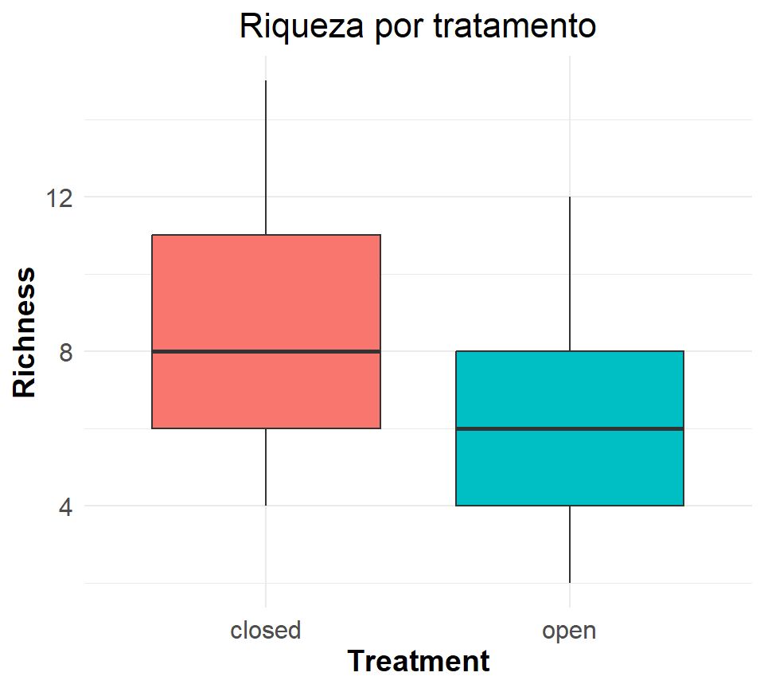
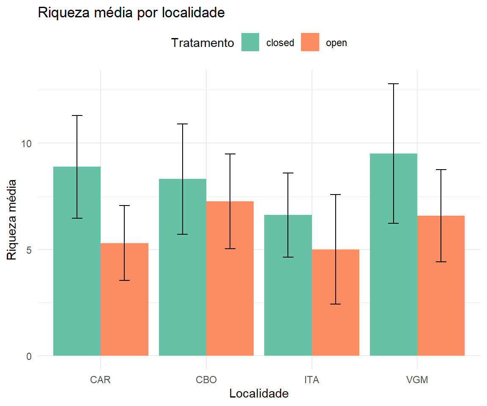

Estruturas e Manipulação de Dados Parte 3
Curso:
Introdução à manejo, visualização e análise de dados com R
8 de janeiro de 2026
Visualização de dados
ggplot2
Pacote para criação de gráficos no R
Baseado na Gramática de Gráficos (Grammar of Graphics)
Constrói gráficos em camadas
Parte do tidyverse, funciona perfeitamente com o
%>%Altamente customizável e com aparência profissional

Visualização de dados
Gramática de Gráficos
Estrutura em camadas
Dados (
data): o dataset a ser visualizadoEstética (
aes): mapeamento de variáveis para elementos visuais (x, y, cor, forma)Geometria (
geom): tipo de gráfico (pontos, linhas, barras)Facetas (
facet): dividir em painéisTemas (
theme): aparência geral do gráfico
- Cada camada é adicionada com o operador
+
Visualização de dados
Estrutura básica
ggplot(): cria a base do gráficoaes(): define o mapeamento estético (quais variáveis usar)geom_*(): define a geometria (tipo de gráfico)Camadas são unidas com
+(não%>%)
Visualização de dados
Preparando os dados
# Carregar dados
dados <- read_csv("../01_dados/biota_diversidade.csv")
# Visualizar estrutura
glimpse(dados)Rows: 172
Columns: 18
$ Id_plot <chr> "CBO_p06o", "CBO_p09o", "CBO_p09c", "CBO_p04c", …
$ Location <chr> "CBO", "CBO", "CBO", "CBO", "CBO", "CBO", "CAR",…
$ Plots <dbl> 6, 9, 9, 4, 5, 11, 12, 6, 15, 7, 1, 11, 12, 14, …
$ Treatment <chr> "open", "open", "closed", "closed", "closed", "o…
$ Date <dbl> 2019, 2019, 2017, 2019, 2019, 2019, 2019, 2019, …
$ Longitude <dbl> -47.98784, -47.98609, -47.98620, -47.99039, -47.…
$ Latitude <dbl> -24.06410, -24.07105, -24.07101, -24.06630, -24.…
$ Elevation <dbl> 807.0578, 727.4435, 727.9145, 823.6266, 771.0035…
$ Richness <dbl> 11, 9, 9, 6, 5, 8, 9, 6, 2, 8, 9, 9, 6, 6, 7, 8,…
$ Abundance <dbl> 55, 23, 38, 26, 48, 50, 32, 25, 15, 51, 64, 51, …
$ D_Shannon <dbl> 2.1831873, 1.9172155, 2.0097092, 1.6769878, 1.41…
$ D_Simpson <dbl> 0.8580247, 0.8150000, 0.8359375, 0.7901235, 0.72…
$ Canopy_cover <dbl> 70.09, 69.88, NA, 67.88, 72.43, 64.40, 66.59, 79…
$ N_M_Trees_adult <dbl> 23, 20, 22, 29, 17, 21, 21, 28, 18, 22, 20, 21, …
$ N_M_Eedulis_adult <dbl> 0, 0, 1, 0, 0, 1, 2, 11, 3, 7, 0, 1, 0, 3, 0, 10…
$ effort_cam_day_summed <dbl> 91, 170, 78, 119, 179, 174, 109, 204, 214, 151, …
$ med_lar_mamm_spp_rich <dbl> 0, 4, 0, 0, 0, 5, 1, 1, 6, 0, 1, 1, 2, 3, 2, 2, …
$ hbvr_body_size_kg <dbl> 0.00000, 220.00000, 0.00000, 0.00000, 0.00000, 1…Gráfico de dispersão
geom_point()
Gráfico de dispersão
geom_point() - cores
Gráfico de dispersão
geom_point() - tamanho
Gráfico de dispersão
geom_point() - transparência
Gráfico de dispersão
geom_smooth()

Gráfico de linhas
geom_line()
Gráfico de linhas
Combinando geometrias
Gráfico de barras
geom_col()
Gráfico de barras
geom_bar()
Gráfico de barras
Barras empilhadas
Gráfico de barras
Barras lado a lado
Histograma
geom_histogram()
Histograma
Ajustando número de bins
Histograma
Por categoria
Densidade
geom_density()
Boxplot
geom_boxplot()
Boxplot
Adicionando pontos
Violin plot
geom_violin()
Violin plot
Combinando com boxplot
Barras de erro
geom_errorbar()
Barras de erro
geom_pointrange()
Facetas
facet_wrap()
Facetas
facet_grid()
Customização - Labels
labs()
Customização - Escalas
Eixos contínuos

Customização - Cores
Cores manuais
Customização - Cores
Paletas prontas - viridis
Customização - Cores
Paletas prontas - ColorBrewer
Customização - Temas
Temas prontos
Customização - Temas
theme_minimal()
Customização - Temas
theme_classic()
Customização - Temas
Personalização avançada
ggplot(dados, aes(x = Treatment,
y = Richness,
fill = Treatment)) +
geom_boxplot() +
theme_minimal() +
theme(
legend.position = "none",
axis.title = element_text(size = 14, face = "bold"),
axis.text = element_text(size = 12),
plot.title = element_text(size = 16, hjust = 0.5)
) +
labs(title = "Riqueza por tratamento")
Salvando gráficos
ggsave()
Pipeline completo
Exemplo integrado
dados %>%
# Processar dados
filter(!is.na(Richness)) %>%
group_by(Treatment, Location) %>%
summarise(
Richness_mean = mean(Richness),
Richness_sd = sd(Richness)
) %>%
# Criar gráfico
ggplot(aes(x = Location,
y = Richness_mean,
fill = Treatment)) +
geom_col(position = "dodge") +
geom_errorbar(
aes(ymin = Richness_mean - Richness_sd,
ymax = Richness_mean + Richness_sd),
position = position_dodge(0.9),
width = 0.2
) +
scale_fill_brewer(palette = "Set2") +
labs(
title = "Riqueza média por localidade",
x = "Localidade",
y = "Riqueza média",
fill = "Tratamento"
) +
theme_minimal() +
theme(legend.position = "top")
Recursos adicionais
Referências úteis
Documentação e tutoriais
Extensões úteis
ggpubr: gráficos prontos para publicaçãopatchwork: combinar múltiplos gráficosgganimate: animaçõesplotly: gráficos interativos
Exercício prático
Tarefa: Usando biota_diversidade.csv, crie um gráfico que:
Mostre a relação entre
Canopy_covereD_ShannonUse cores para diferenciar os
TreatmentAdicione uma linha de tendência
Use facetas para separar por
LocationCustomize com tema, labels e cores adequadas
Salve o gráfico em alta resolução
Tempo: 15 minutos